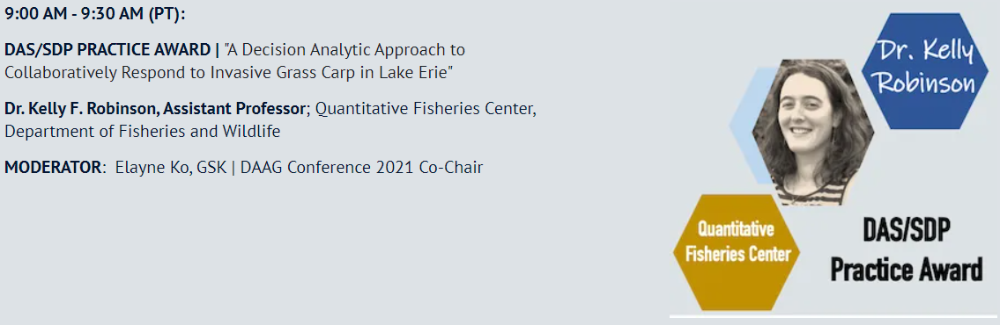

| ||
Knowledge Content LibraryDAAG 2021DAS/SDP Practice Award: A Decision Analytic Approach to Collaboratively Respond to Invasive Grass Carp in Lake ErieSpeaker: Dr. Kelly F. Robinson, Assistant Professor; Quantitative Fisheries Center, Department of Fisheries and Wildlife  To purchase a replay of the entire DAAG 2021 conference, go here. Keywords: Risk and Uncertainty riskunc, Risk analysis riskanal | ||